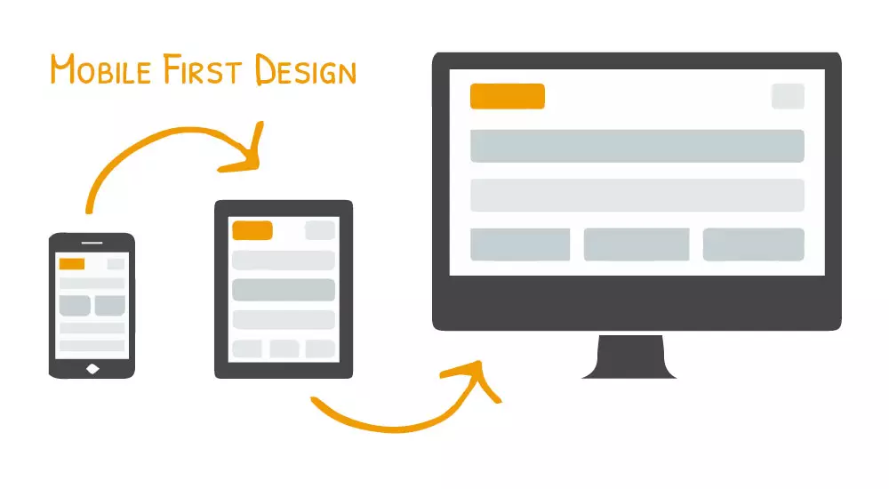

Pensar Mobile-First é uma abordagem de design e desenvolvimento web que prioriza a criação de sites para dispositivos móveis antes de otimizar para dispositivos com telas maiores, como tablets e desktops. Esta abordagem é baseada na premissa de que o uso de dispositivos móveis está crescendo rapidamente, e garantir uma boa experiência para esses usuários deve ser uma prioridade.
A ideia é começar o design e desenvolvimento com a menor largura de tela e, em seguida, adicionar recursos e melhorar o layout à medida que a largura da tela aumenta. Isso ajuda a garantir que o site seja funcional e acessível em uma ampla gama de dispositivos.
